<title>Tablero interiores E9</title>
<meta name="claude:viewport-fit-sides" content="cover">
<style>
@import url('https://fonts.googleapis.com/css2?family=Manrope:wght@400;500;600;800&display=swap');
:root {
  color-scheme: dark;
  --fondo: #111111;
  --hondo: #000000;
  --modulo: #1b1b1b;
  --borde: #2c2c2c;
  --filete: rgba(247, 245, 240, 0.12);
  --papel: #f7f5f0;
  --gris: #a3acb7;
  --marca-fondo: #f7f5f0;
  --marca-texto: #000000;
  --petroleo: #0f766e;
  --petroleo-t: #fff4e2;
  --brasa: #da3400;
  --brasa-t: #ffffff;
  --r: 6px;
}
* { box-sizing: border-box; }
html { -webkit-text-size-adjust: 100%; }
body { margin: 0; background: var(--fondo); color: var(--papel); font: 400 16px/1.55 'Manrope', system-ui, -apple-system, 'Segoe UI', sans-serif; -webkit-font-smoothing: antialiased; }
img { max-width: 100%; height: auto; display: block; }
a { color: inherit; }
.tab { max-width: 1240px; margin: 0 auto; padding-top: 40px; padding-bottom: 96px; padding-left: max(16px, env(safe-area-inset-left, 0px)); padding-right: max(16px, env(safe-area-inset-right, 0px)); }
h1, h2, h3, h4 { font-weight: 500; letter-spacing: -0.02em; margin: 0; }
h1 { font-size: clamp(1.9rem, 4.4vw, 3rem); line-height: 1.1; }
h2 { font-size: clamp(1.5rem, 3vw, 2.1rem); line-height: 1.2; }
h3 { font-size: clamp(1.15rem, 2vw, 1.4rem); line-height: 1.3; }
h4 { font-size: 1rem; font-weight: 600; letter-spacing: 0; }
p { margin: 0; }
.meta { color: var(--gris); font-size: 0.875rem; margin-top: 10px; }
.chico { font-size: 0.875rem; color: var(--gris); }
.guia { font-size: clamp(1.05rem, 1.6vw, 1.2rem); line-height: 1.55; }

/* cabecera */
.cab { padding-bottom: 36px; border-bottom: 1px solid var(--filete); }
.decide { margin: 28px 0 0; padding: 0; list-style: none; counter-reset: d; display: grid; gap: 10px; max-width: 900px; }
.decide li { counter-increment: d; display: grid; grid-template-columns: 28px 1fr; gap: 6px; font-size: clamp(1rem, 1.5vw, 1.125rem); }
.decide li::before { content: counter(d); color: var(--gris); font-variant-numeric: tabular-nums; }
.responde { margin-top: 28px; background: var(--modulo); border-radius: var(--r); padding: 18px 20px; max-width: 900px; display: grid; gap: 8px; }
.responde b { font-weight: 600; }

/* índice */
.indice { margin: 22px 0 0; padding: 0; list-style: none; display: flex; flex-wrap: wrap; gap: 8px; }
.indice a { display: inline-flex; align-items: center; height: 34px; padding: 0 12px; border-radius: var(--r); background: var(--modulo); text-decoration: none; font-size: 0.875rem; font-weight: 500; }
.indice a:hover, .indice a:focus-visible { background: #262626; }
a:focus-visible, summary:focus-visible { outline: 2px solid var(--papel); outline-offset: 3px; }

/* secciones */
.sec { padding-top: 72px; scroll-margin-top: 8px; }
.sec > h2 { margin-bottom: 14px; }
.nota-dir { display: grid; grid-template-columns: repeat(3, minmax(0, 1fr)); gap: 16px; margin: 18px 0 0; }
.nota-dir div { border-top: 1px solid var(--filete); padding-top: 12px; }
.nota-dir h4 { margin-bottom: 6px; color: var(--gris); font-weight: 500; font-size: 0.875rem; }
.cambia { margin: 26px 0 0; display: grid; gap: 10px; max-width: 900px; }
.decisiones { margin-top: 22px; border-top: 1px solid var(--filete); border-bottom: 1px solid var(--filete); }
.decisiones summary { cursor: pointer; padding: 14px 0; font-weight: 500; list-style-position: inside; }
.decisiones ul { margin: 0 0 18px; padding: 0 0 0 18px; display: grid; gap: 8px; font-size: 0.9375rem; color: var(--gris); }
.decisiones li b { color: var(--papel); font-weight: 600; }

/* una página del prototipo: 1440 y 390 lado a lado */
.pagina { margin-top: 40px; }
.pagina__cab { display: flex; flex-wrap: wrap; justify-content: space-between; align-items: baseline; gap: 6px 20px; margin-bottom: 14px; }
.pagina__dato { color: var(--gris); font-size: 0.875rem; }
.par { display: grid; grid-template-columns: minmax(0, 1fr) 320px; gap: 20px; align-items: start; }
.col { min-width: 0; }
.col__rot { font-size: 0.8125rem; color: var(--gris); margin-bottom: 6px; }
.tira { border: 1px solid var(--borde); border-radius: var(--r); overflow: hidden; background: var(--hondo); }
.tira img { width: 100%; }
.col--390 { max-width: 320px; }
.resto { margin-top: 12px; }
.resto summary { cursor: pointer; display: inline-block; padding: 9px 14px; border-radius: var(--r); background: var(--modulo); font-weight: 500; font-size: 0.9375rem; }
.resto[open] summary { margin-bottom: 14px; }
.reco { margin-top: 36px; padding: 20px; border-radius: var(--r); background: var(--modulo); max-width: 900px; display: grid; gap: 8px; }

/* prueba */
.prueba { margin-top: 44px; padding-top: 22px; border-top: 1px solid var(--filete); }
.prueba > p { margin-top: 10px; max-width: 900px; }
.prueba__fotos { margin-top: 18px; display: grid; grid-template-columns: minmax(0, 1fr) 320px; gap: 20px; align-items: start; }
.dos { display: grid; grid-template-columns: repeat(2, minmax(0, 1fr)); gap: 20px; }
.lado { margin-top: 18px; }
.lado .col__rot { margin-top: 0; }

/* espera tu ok */
.ok { margin-top: 44px; padding-top: 22px; border-top: 1px solid var(--filete); }
.marca { display: inline-flex; align-items: center; height: 28px; padding: 0 10px; border-radius: 4px; background: var(--marca-fondo); color: var(--marca-texto); font-size: 0.8125rem; font-weight: 600; white-space: nowrap; }
.ok__cab { display: flex; flex-wrap: wrap; gap: 10px 14px; align-items: center; }
.pro { margin-top: 14px; display: grid; gap: 6px; max-width: 900px; }
.pro b { font-weight: 600; }

/* piezas */
.piezas { margin: 18px 0 0; padding: 0; list-style: none; border-top: 1px solid var(--filete); }
.piezas li { display: grid; grid-template-columns: minmax(0, 2fr) minmax(0, 3fr); gap: 4px 20px; padding: 12px 0; border-bottom: 1px solid var(--filete); font-size: 0.9375rem; }
.piezas li span { color: var(--gris); overflow-wrap: anywhere; }
.piezas code, .chico code { font: 500 0.8125rem/1.4 ui-monospace, 'SFMono-Regular', Menlo, monospace; color: var(--papel); overflow-wrap: anywhere; }
.aviso { margin-top: 18px; display: grid; gap: 8px; max-width: 900px; color: var(--gris); font-size: 0.9375rem; }
.aviso b { color: var(--papel); font-weight: 600; }

@media (max-width: 860px) {
  .par, .prueba__fotos, .dos { grid-template-columns: minmax(0, 1fr); }
  .nota-dir { grid-template-columns: 1fr; }
  .piezas li { grid-template-columns: minmax(0, 1fr); }
  .col--390 { max-width: 390px; }
}
</style>

<main class="tab">

<header class="cab">
  <h1>Interiores: dos direcciones para decidir</h1>
  <p class="meta">E9 · tablero de la compuerta · 14-oct-2026, 19:00 (Chile) · Lucía, dirección de arte · Base: el sitio construido de <code>72045f8</code></p>
  <ol class="decide">
    <li>Eliges una de dos direcciones para las páginas interiores: la 1 «Pantallas» o la 2 «Lectura de máquina». No hay tercera.</li>
    <li>Las dos están armadas sobre las páginas reales de Acompañamiento mensual y Desarrollo web, con el texto aprobado en E8: solo cambian la composición y las imágenes.</li>
    <li>Ninguna usa las 6 fotos de ambiente. Todo es obra, pantallas o lecturas reales de nuestros dominios, cada una con su fecha.</li>
    <li>Más abajo ves cómo queda la prueba (el compromiso de 3 meses, el 36 → 73 → 100 y la metodología 30/40/30) y tres pruebas nuevas marcadas «Espera tu OK»: marcas cuáles autorizas.</li>
    <li>Recomiendo la 2. El porqué está al final de las dos direcciones.</li>
  </ol>
  <div class="responde">
    <p><b>Para responder basta una línea:</b> «Dirección 1» o «Dirección 2», y sí o no para cada prueba nueva: el 67 de 69, la captura con 85 y 54, y el panel de Combeau.</p>
    <p class="chico">Para Combeau te pregunto además si hay permiso escrito de Bernardo: su ficha dice «caso público NO autorizado» y el brief de obra habla de un permiso verbal del 30-sep.</p>
  </div>
  <nav aria-label="En este tablero"><ul class="indice">
    <li><a href="#d1">Dirección 1</a></li>
    <li><a href="#d2">Dirección 2</a></li>
    <li><a href="#prueba">La prueba</a></li>
    <li><a href="#ok">Espera tu OK</a></li>
    <li><a href="#piezas">Piezas y fuentes</a></li>
  </ul></nav>
</header>

<!-- ======================================================= DIRECCIÓN 1 -->
<section class="sec" aria-labelledby="d1">
  <h2 id="d1">Dirección 1 · Pantallas</h2>
  <div class="nota-dir">
    <div><h4>Referencia dominante</h4><p>Los casos de driftime (CeHDI, Finnish Institute, Secure Energy): página negra, galerías entre las secciones.</p></div>
    <div><h4>Rasgo que toma</h4><p>El ritmo de revista: texto, galería, texto, galería. Filas de alto común con cada pieza en su proporción.</p></div>
    <div><h4>Qué sacrifica</h4><p>El color del campo en la página (sigue negra, como hoy) y pide mucho material: 6 a 10 piezas en cada una de las 13 internas.</p></div>
  </div>
  <div class="cambia guia">
    <p>Entre cada par de secciones va una galería: 6 piezas en Acompañamiento y 7 en Desarrollo web, donde hoy hay 3 y 6.</p>
    <p>La foto a sangre de la cabecera pasa a ser una pantalla real: el robots.txt de spindlelab.cl en Acompañamiento y la portada de Combeau en Desarrollo web.</p>
    <p>El color del campo vive solo dentro de las piezas: el fondo de estudio de los montajes y las lecturas de máquina.</p>
    <p>«Así se ve un mes tipo» y «Cinco fases» pasan a una tira de columnas: corta la seguidilla de etiqueta a la izquierda y lista a la derecha.</p>
  </div>
  <details class="decisiones">
    <summary>Las decisiones, una por línea, contra la referencia</summary>
    <ul>
      <li><b>6 y 7 piezas, no 22.</b> El caso CeHDI lleva 22; con material real y fechado llegamos a 6 y 7 sin repetir una foto de ambiente (brief §7.5: cada interna crece hasta donde llega el material).</li>
      <li><b>Una galería entre cada par de secciones.</b> Es la alternancia del caso (lock §6.4); hoy hay una sola galería al medio.</li>
      <li><b>Filas de dos con alto común:</b> retrato 0,75 + JSON-LD 1,33; robots 1,0 + respuesta 1,18; Verifica 1,33 + 0,91. Son las filas 05, 07 y 20 de CeHDI. Nada se recorta.</li>
      <li><b>«Una pieza y negro al lado»</b> (8 de 12 columnas) para los 21 chequeos y para Raigal; Combeau en notebook en 7 de 12, cargado a la derecha. Son las filas 04 y 08 de CeHDI: aire alrededor de lo que hay que mirar.</li>
      <li><b>Cabecera a sangre con una pantalla montada.</b> CeHDI abre con la obra en un notebook a sangre. Robots.txt y JSON-LD los monté desde el crudo de hoy de Bruno, en notebook y teléfono sobre el color del campo.</li>
      <li><b>Tira de columnas</b> para el mes tipo (4) y las fases (5): las cifras S1 a S4 y 01 a 05 suben a 30 px; el texto no cambia.</li>
      <li><b>Celular:</b> las filas de dos son carrusel con la siguiente pieza asomándose (lock §7), alto común de 66 % del ancho, para que una pieza 4:3 se vea entera.</li>
    </ul>
  </details>

  <div class="pagina">
    <div class="pagina__cab"><h3>Acompañamiento mensual</h3><p class="pagina__dato">6 piezas (hoy 3, dos de ellas fotos de ambiente) · alto 8.539 px a 1440 (hoy 7.158) y 8.979 a 390 (hoy 8.304)</p></div>
    <div class="par">
      <div class="col"><p class="col__rot">1440</p><div class="tira">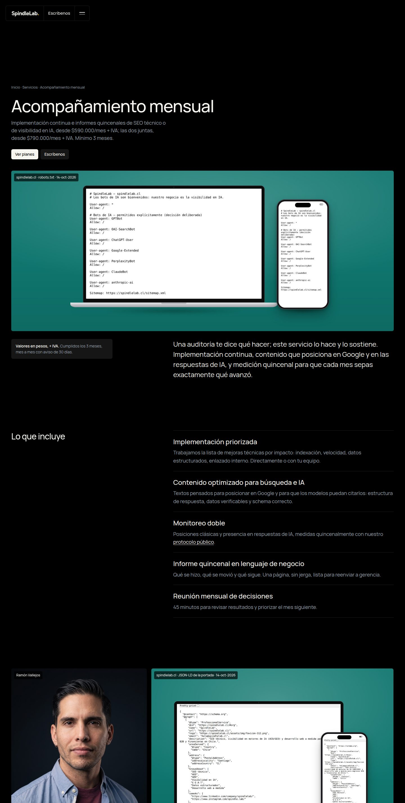</div></div>
      <div class="col col--390"><p class="col__rot">390</p><div class="tira">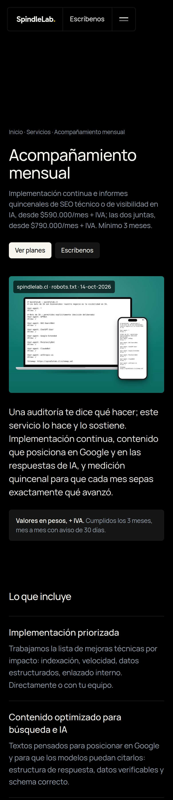</div></div>
    </div>
    <details class="resto">
      <summary>Ver la página completa</summary>
      <div class="par">
        <div class="col"><div class="tira">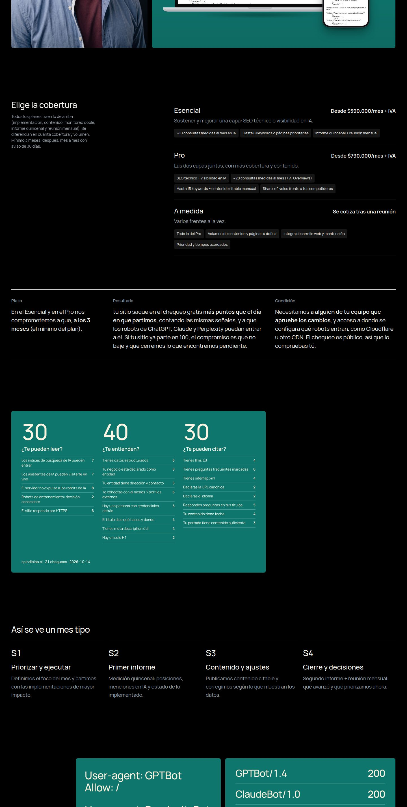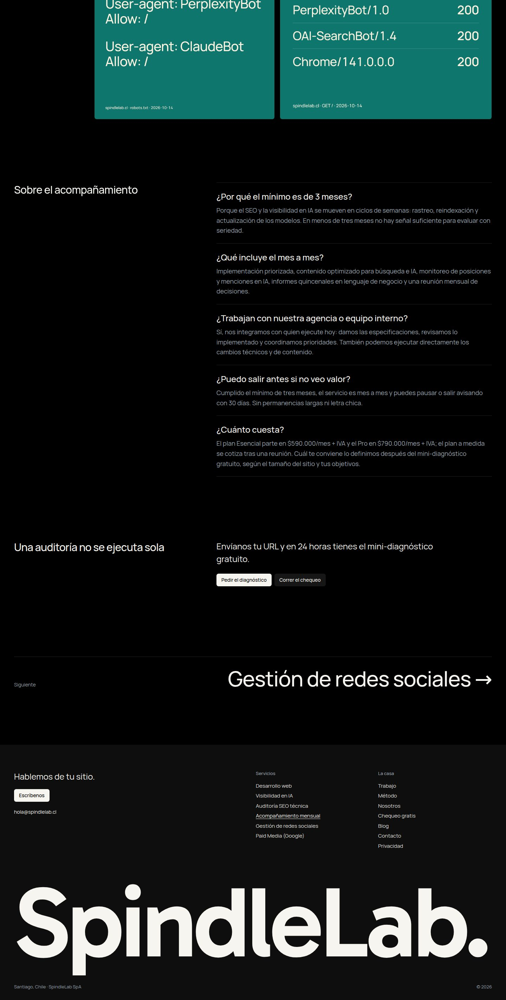</div></div>
        <div class="col col--390"><div class="tira">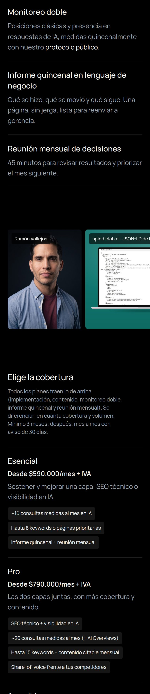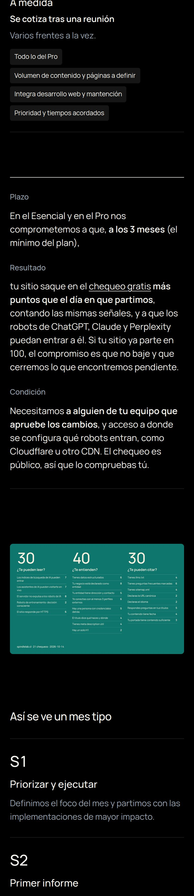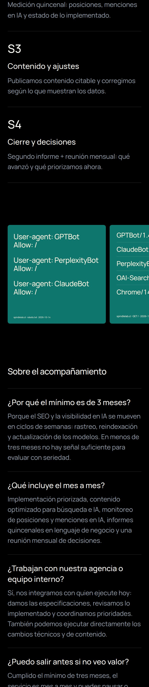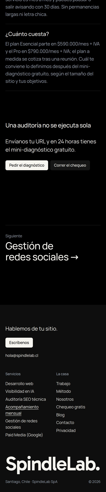</div></div>
      </div>
    </details>
  </div>

  <div class="pagina">
    <div class="pagina__cab"><h3>Desarrollo web</h3><p class="pagina__dato">7 piezas (hoy 6, dos de ellas fotos de ambiente) · alto 8.951 px a 1440 (hoy 8.275) y 9.107 a 390 (hoy 8.837)</p></div>
    <div class="par">
      <div class="col"><p class="col__rot">1440</p><div class="tira">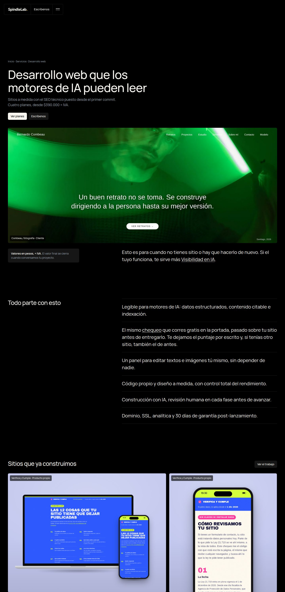</div></div>
      <div class="col col--390"><p class="col__rot">390</p><div class="tira">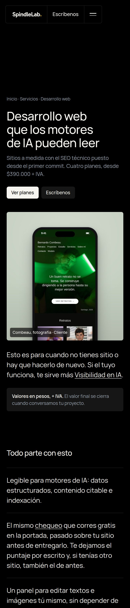</div></div>
    </div>
    <details class="resto">
      <summary>Ver la página completa</summary>
      <div class="par">
        <div class="col"><div class="tira">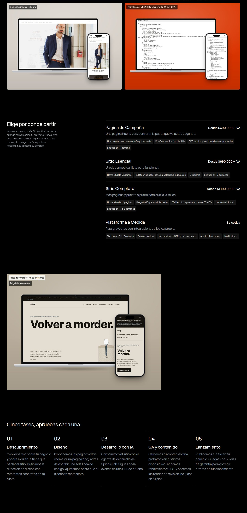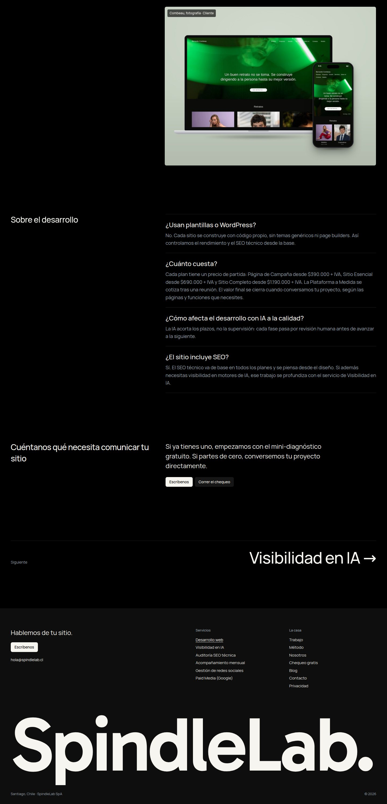</div></div>
        <div class="col col--390"><div class="tira">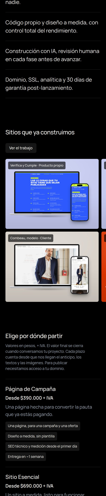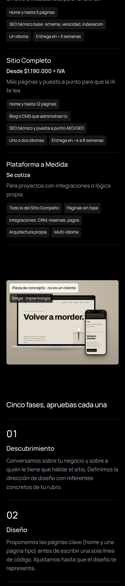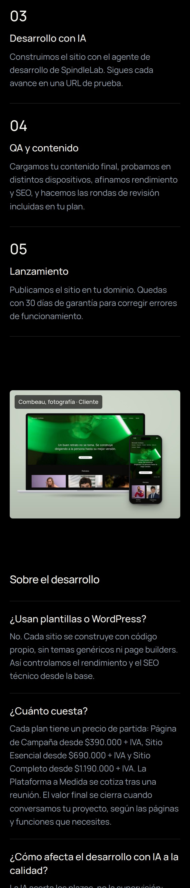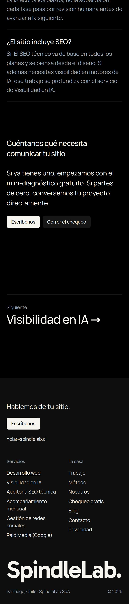</div></div>
      </div>
    </details>
  </div>
</section>

<!-- ======================================================= DIRECCIÓN 2 -->
<section class="sec" aria-labelledby="d2">
  <h2 id="d2">Dirección 2 · Lectura de máquina</h2>
  <div class="nota-dir">
    <div><h4>Referencia dominante</h4><p>Los campos de la home (son de driftime): la cabecera del servicio toma el color de su campo.</p></div>
    <div><h4>Rasgo que toma</h4><p>El campo como pantalla de color con texto al 100 %, y la lectura de máquina en grande como imagen principal.</p></div>
    <div><h4>Qué sacrifica</h4><p>La densidad de revista: 4 a 6 piezas por página. Y se aparta de los casos de driftime en la cabecera, que allá es negra.</p></div>
  </div>
  <div class="cambia guia">
    <p>La cabecera es una banda del campo: petróleo en Acompañamiento, brasa en Desarrollo web. El h1 sigue en 60 px y peso 500, sin display. Cierra el pendiente del color del campo en las internas (spec §7:195).</p>
    <p>En vez de la foto a sangre, la entrada va al lado de una lectura grande: la respuesta a cada robot en Acompañamiento, el JSON-LD en Desarrollo web.</p>
    <p>Las lecturas van grandes y alternan con la obra: menos piezas, de 770 a 1.360 px de ancho a 1440, y cada una se lee.</p>
    <p>El compromiso de los 3 meses es una banda petróleo. El resto de la página sigue en negro.</p>
  </div>
  <details class="decisiones">
    <summary>Las decisiones, una por línea, contra la referencia</summary>
    <ul>
      <li><b>Banda de unos 600 px a 1440 y 450 a 390, no pantalla completa.</b> Es el campo de la home en versión cabecera: quien entra desde «Continuidad» llega a petróleo. Texto, miga y línea en el color del texto del campo al 100 % (manual §04).</li>
      <li><b>h1 de 60 px en 500 dentro de la banda.</b> La regla del 5-oct (cero display en una interna) no se toca.</li>
      <li><b>Texto 5/12 y pieza 7/12</b> en lugar de la foto a sangre: es la nota y la entrada del caso de driftime, con una prueba en vez de un ambiente.</li>
      <li><b>4 piezas en Acompañamiento y 6 en Desarrollo web.</b> La respuesta a cada robot, los 21 chequeos a todo el ancho, robots.txt con el retrato; en Desarrollo web, el JSON-LD, los 21 chequeos y la obra.</li>
      <li><b>Los 21 chequeos a todo el ancho antes de los planes</b> en Acompañamiento: es lo que mide el compromiso («contando las mismas señales»). En Desarrollo web van pegados a «Te dejamos el puntaje por escrito».</li>
      <li><b>Las lecturas en el color del servicio.</b> Robots en petróleo y los 21 en brasa son variantes de las piezas de Bruno, rendidas con su generador (<code>--campo</code>): el mismo texto, comprobado contra el crudo.</li>
      <li><b>Celular:</b> todo se apila a todo el ancho, sin carrusel.</li>
    </ul>
  </details>

  <div class="pagina">
    <div class="pagina__cab"><h3>Acompañamiento mensual</h3><p class="pagina__dato">4 piezas (hoy 3, dos de ellas fotos de ambiente) · alto 8.449 px a 1440 (hoy 7.158) y 9.022 a 390 (hoy 8.304)</p></div>
    <div class="par">
      <div class="col"><p class="col__rot">1440</p><div class="tira">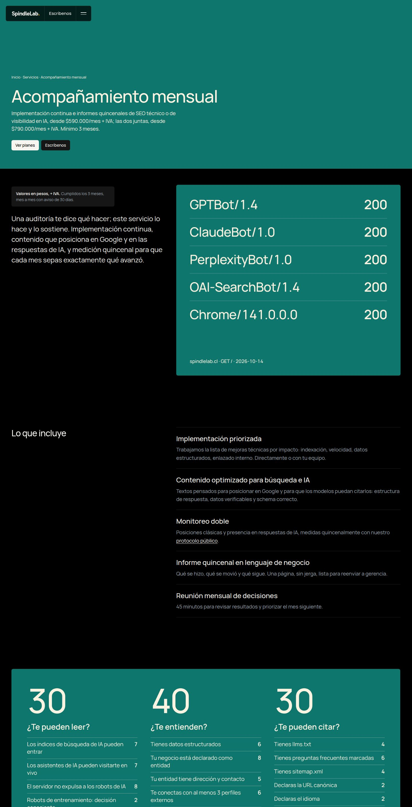</div></div>
      <div class="col col--390"><p class="col__rot">390</p><div class="tira">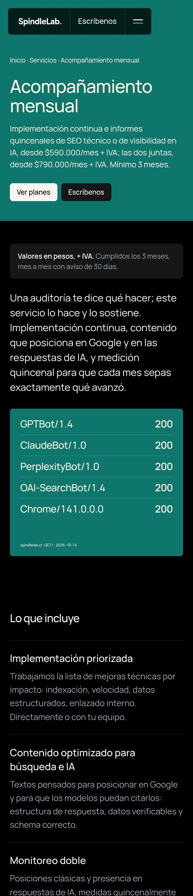</div></div>
    </div>
    <details class="resto">
      <summary>Ver la página completa</summary>
      <div class="par">
        <div class="col"><div class="tira">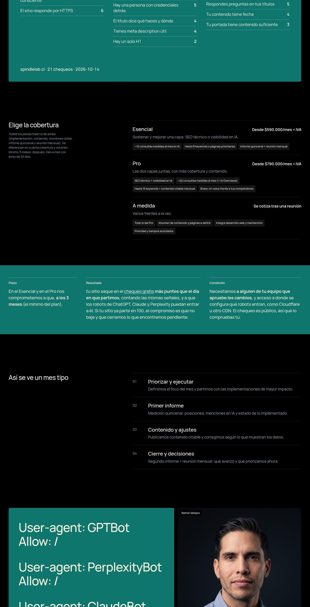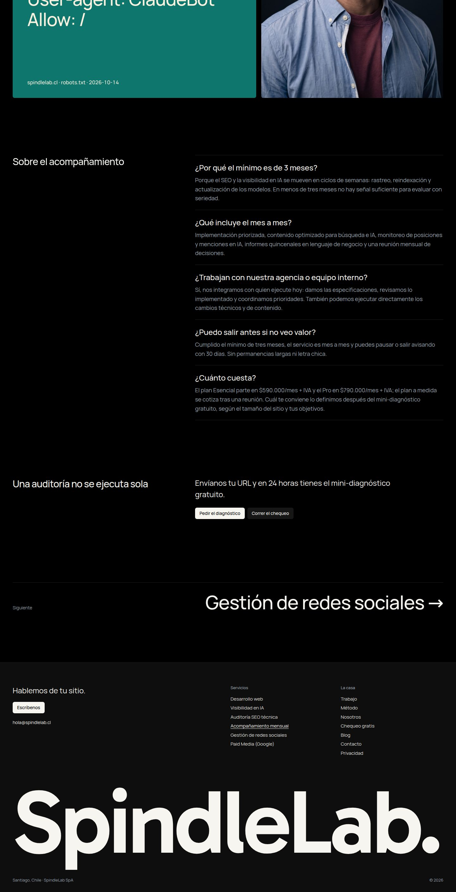</div></div>
        <div class="col col--390"><div class="tira">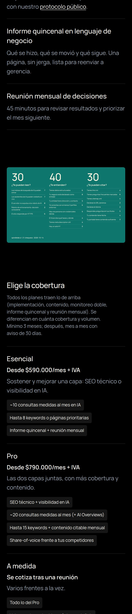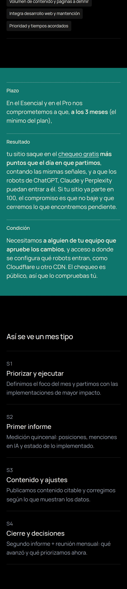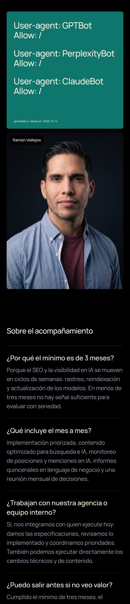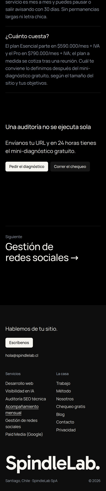</div></div>
      </div>
    </details>
  </div>

  <div class="pagina">
    <div class="pagina__cab"><h3>Desarrollo web</h3><p class="pagina__dato">6 piezas (hoy 6, dos de ellas fotos de ambiente) · alto 9.159 px a 1440 (hoy 8.275) y 8.881 a 390 (hoy 8.837)</p></div>
    <div class="par">
      <div class="col"><p class="col__rot">1440</p><div class="tira">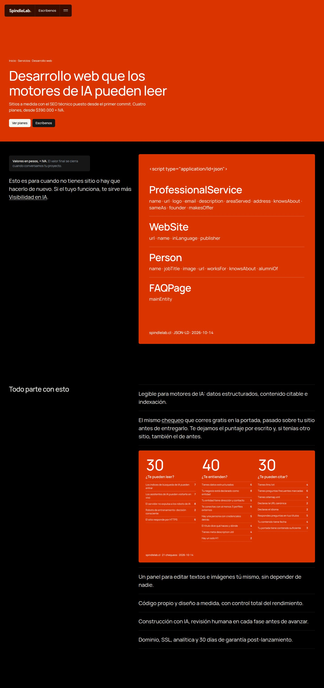</div></div>
      <div class="col col--390"><p class="col__rot">390</p><div class="tira">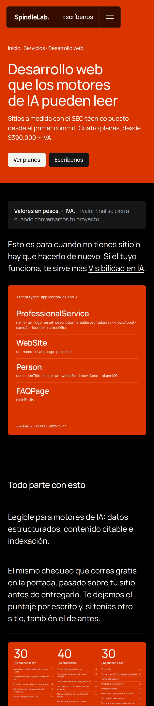</div></div>
    </div>
    <details class="resto">
      <summary>Ver la página completa</summary>
      <div class="par">
        <div class="col"><div class="tira">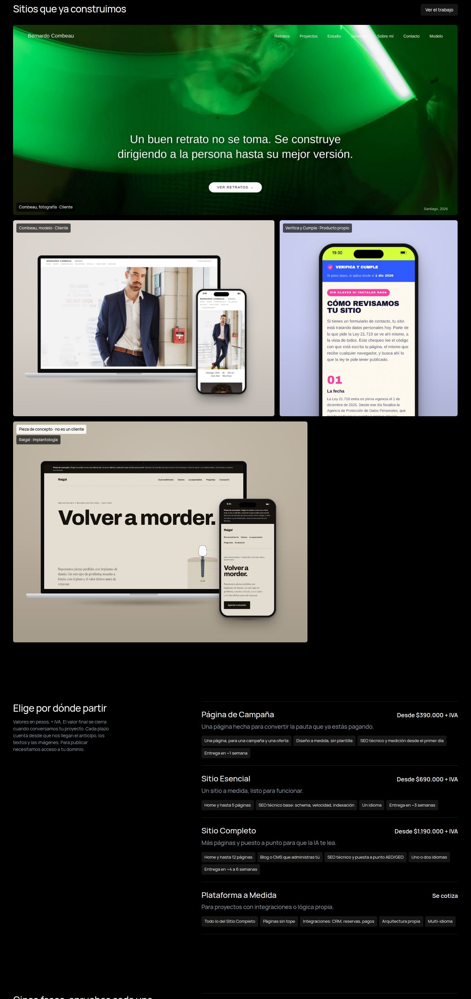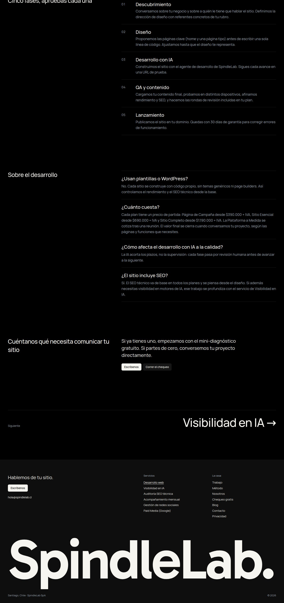</div></div>
        <div class="col col--390"><div class="tira">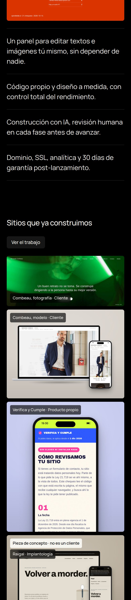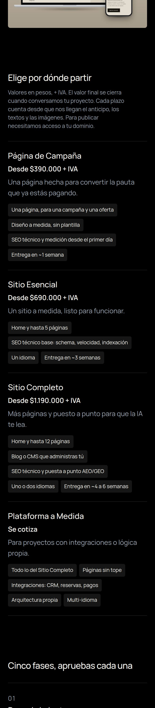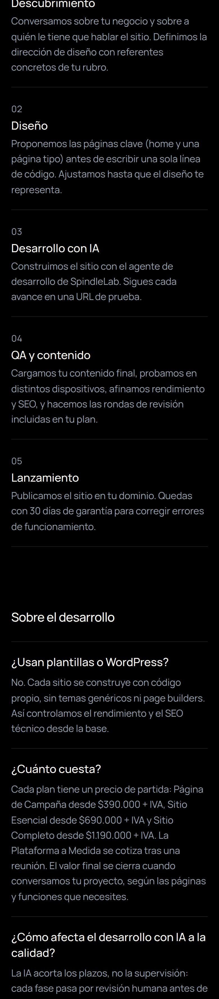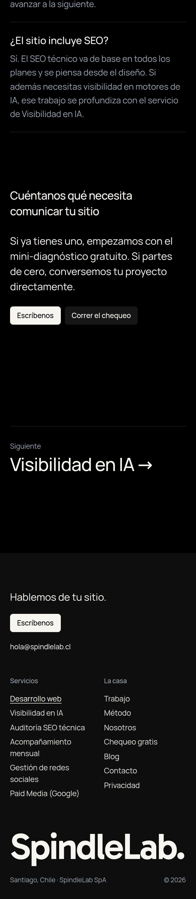</div></div>
      </div>
    </details>
  </div>

  <div class="reco">
    <h3>Por qué recomiendo la 2</h3>
    <p>Lo que marcaste es que las internas pierden el pulso de la home. El pulso de la home son los campos de color con su imagen: la 2 lleva ese color a la cabecera de cada servicio y pone la prueba en grande, con menos piezas y todas legibles.</p>
    <p>La 1 es más fiel a los casos de driftime, pero llenar 6 a 10 lugares en cada una de 13 internas con material real obliga a repetir pantallas de texto (robots.txt, JSON-LD) en distintos ángulos. Eso es relleno con otro nombre, y en celular la mitad de las piezas queda escondida en el carrusel.</p>
    <p class="chico">Lo que la 2 no resuelve y la 1 tampoco: a 390, la lista de los 21 chequeos no se lee como pieza. En el teléfono se lee entera en Diagnóstico (el dibujo de abajo, que es texto real).</p>
  </div>
</section>

<!-- ======================================================= LA PRUEBA -->
<section class="sec" aria-labelledby="prueba">
  <h2 id="prueba">La prueba, en grande</h2>
  <p class="guia">Cuatro recortes. Valen para cualquiera de las dos direcciones, salvo donde se dice.</p>

  <div class="prueba">
    <h3>El compromiso de los 3 meses, en tres partes</h3>
    <p>Las palabras son las aprobadas, en su orden. Solo se agregan los rótulos y el 600 en una frase por parte, para que se lea en 3 segundos: a los 3 meses, más puntos que el día en que partimos, alguien de tu equipo que apruebe los cambios.</p>
    <p class="chico">Va en el orden en que está escrito: plazo, resultado, condición. Para que quede «Resultado · Plazo · Condición» hay que reescribir la frase; si lo prefieres así, lo hace Clara en la Tanda B.</p>
    <div class="lado"><p class="col__rot">En la Dirección 1: sobre negro, entre filetes</p>
      <div class="prueba__fotos">
        <div class="tira">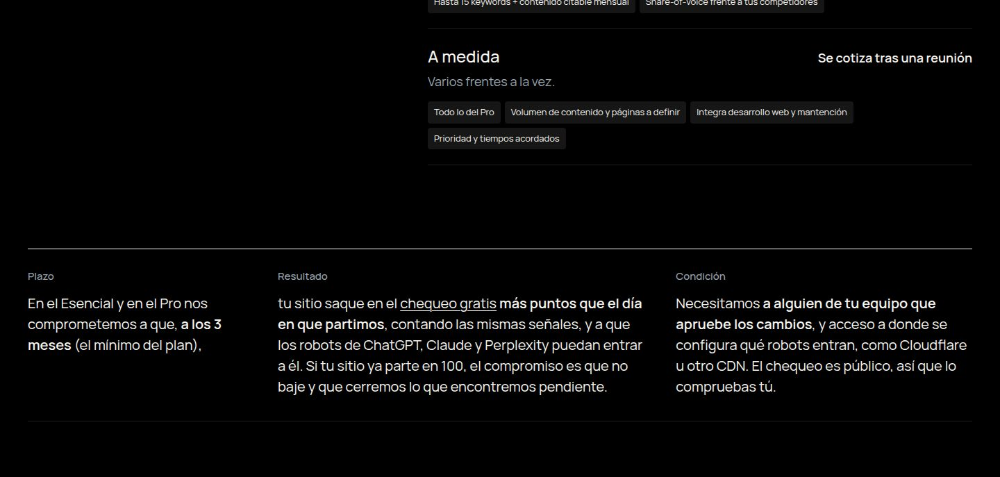</div>
        <div class="tira col--390">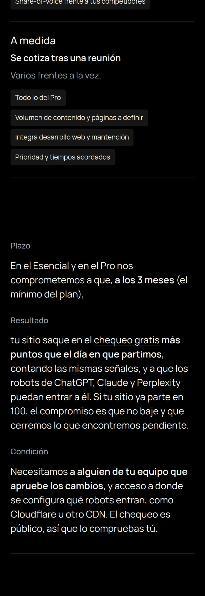</div>
      </div>
    </div>
    <div class="lado"><p class="col__rot">En la Dirección 2: banda petróleo</p>
      <div class="prueba__fotos">
        <div class="tira">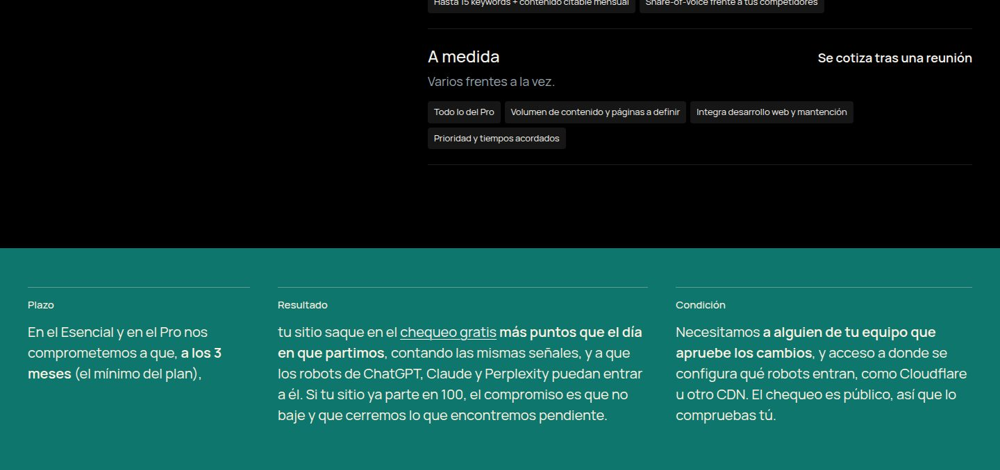</div>
        <div class="tira col--390">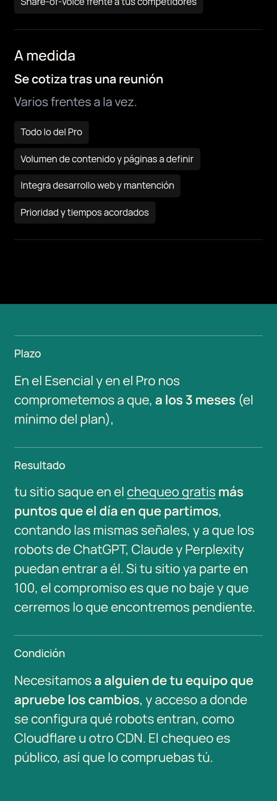</div>
      </div>
    </div>
  </div>

  <div class="prueba">
    <h3>Trabajo: 36 → 73 → 100 como cifras fechadas, y la fila vuelve a cuadrar</h3>
    <p>Las cifras en 500, sin display, en la ficha de Verifica y Cumple: el único lugar del sitio con ese número. Los enlaces de las dos fichas quedan a la misma altura: hoy el de Verifica cae 148 a 185 px más abajo que el de Combeau modelo (medido de 1024 a 1920); con el cambio, 0 px.</p>
    <p class="chico">Las fechas y las notas salen palabra por palabra del párrafo aprobado; lo único nuevo es el rótulo «spindlelab.cl en el chequeo de la Ley 21.719», que Clara afina en la Tanda B. Usé la letra del sitio y no la pieza de Bruno: dentro de la ficha, esa pieza mide unos 390 px de alto y la fila se volvía a descuadrar.</p>
    <div class="dos lado">
      <div><p class="col__rot">Hoy, 1440</p><div class="tira">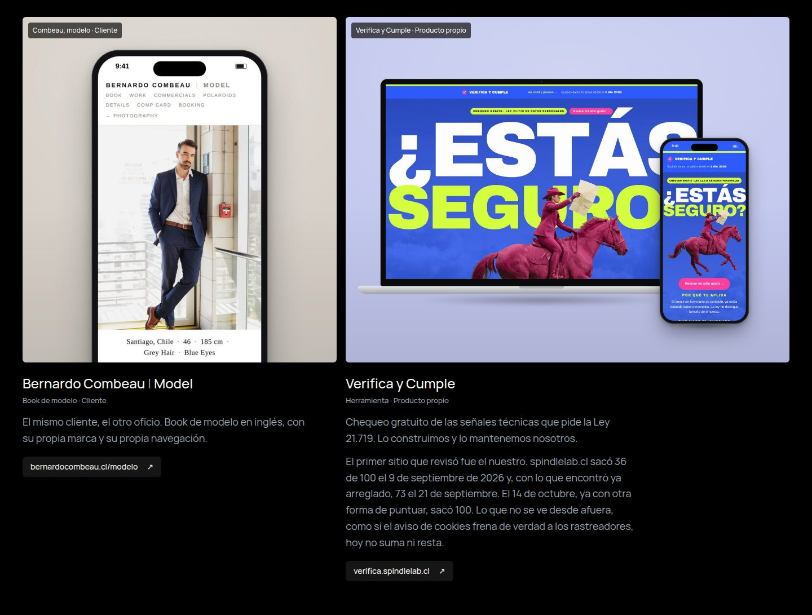</div></div>
      <div><p class="col__rot">Con E9, 1440</p><div class="tira">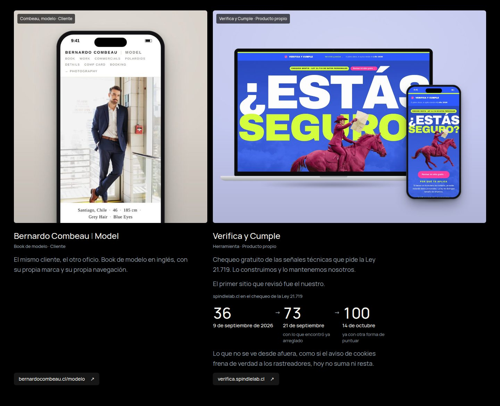</div></div>
    </div>
    <div class="lado"><p class="col__rot">Con E9, 390</p><div class="tira col--390">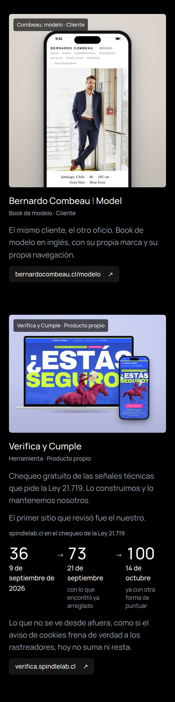</div></div>
  </div>

  <div class="prueba">
    <h3>Diagnóstico: la metodología dibujada</h3>
    <p>Sale la foto del hilo. Entran los tres bloques con ancho 30, 40 y 30, y sus 21 chequeos con su peso, tal como los devuelve el chequeo hoy. La nota de 14 px pasa a ser el titular del dibujo. Es texto, no imagen: se lee entero en el teléfono.</p>
    <div class="dos lado">
      <div><p class="col__rot">Hoy, 1440</p><div class="tira">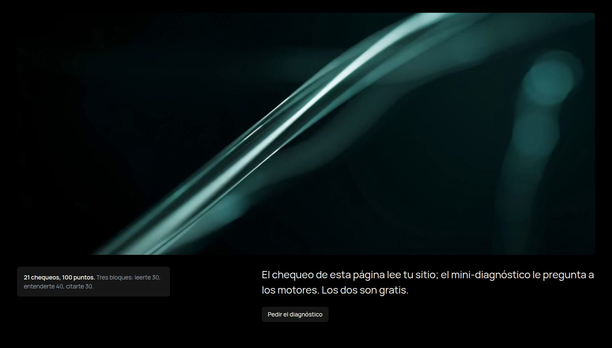</div></div>
      <div><p class="col__rot">Con E9, 1440</p><div class="tira">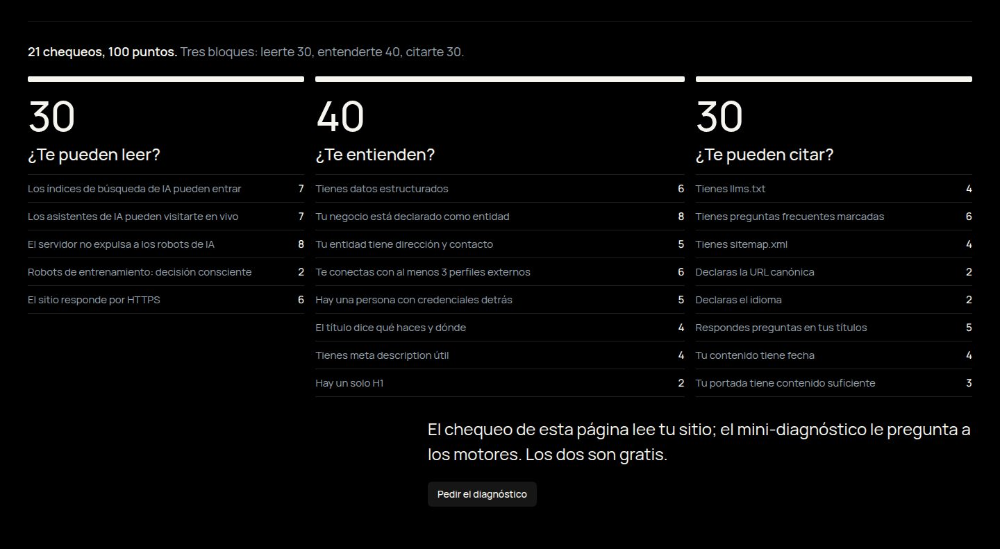</div></div>
    </div>
    <div class="lado"><p class="col__rot">Con E9, 390</p><div class="tira col--390">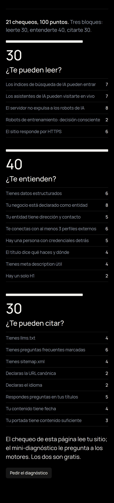</div></div>
  </div>

  <div class="prueba">
    <h3>Desarrollo web: «Te dejamos el puntaje por escrito»</h3>
    <p>Pegada a esa línea va la lista de los 21 chequeos con su peso: es contra lo que se escribe el puntaje. Así queda sin tu OK. Con tu OK, ahí va la captura del chequeo con el puntaje real (abajo, en «Espera tu OK»).</p>
    <div class="prueba__fotos">
      <div class="tira">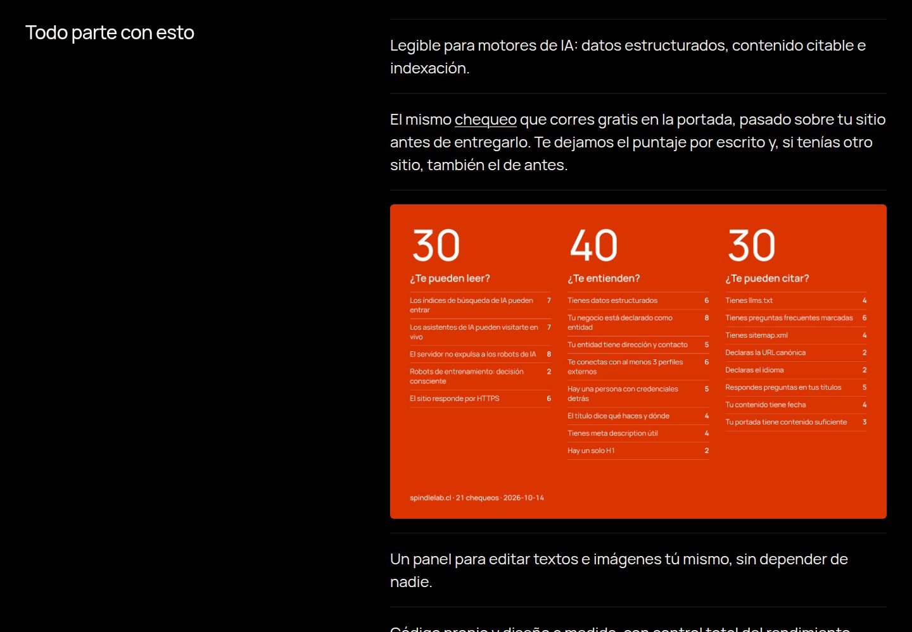</div>
      <div class="tira col--390">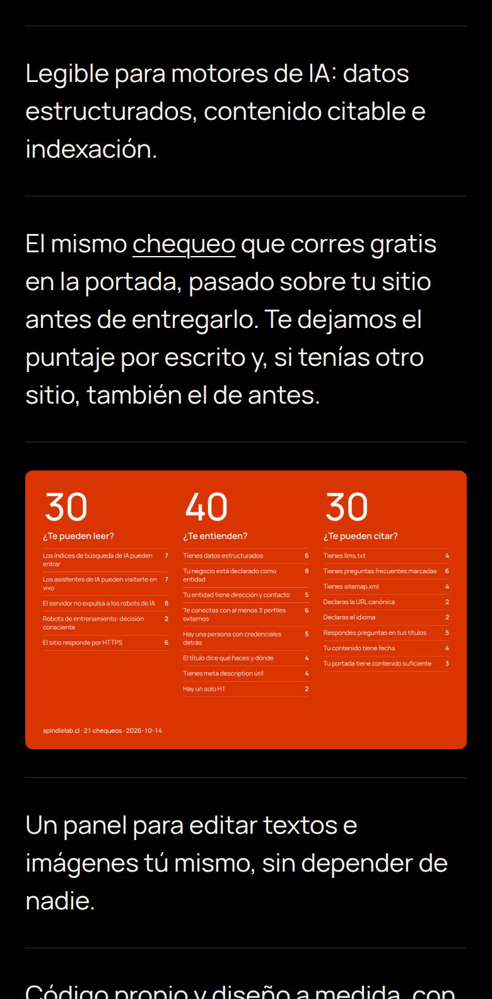</div>
    </div>
  </div>
</section>

<!-- ======================================================= ESPERA TU OK -->
<section class="sec" aria-labelledby="ok">
  <h2 id="ok">Tres pruebas que esperan tu OK</h2>
  <p class="guia">Cada una está dibujada en el lugar donde iría, con su marca. Ninguna se construye si no la marcas.</p>

  <div class="ok">
    <div class="ok__cab"><span class="marca">Espera tu OK</span><h3>El 67 de 69, en Diagnóstico</h3></div>
    <div class="pro">
      <p><b>Dónde:</b> bajo «¿Te pueden citar?», en el dibujo de la metodología.</p>
      <p><b>A favor:</b> es el dato propio más fuerte que tenemos, de nuestras corridas del chequeo, solo agregados y sin un dominio. <b>En contra:</b> es del 31-ago, mide una sola señal (preguntas frecuentes marcadas) y la home v3 hoy también la falla.</p>
      <p class="chico">Fuente: <code>marketing/metricas/corridas-chequeo-2026-08-31.md</code>, 38 inmobiliarias y 31 contadores.</p>
    </div>
    <div class="prueba__fotos lado">
      <div class="tira">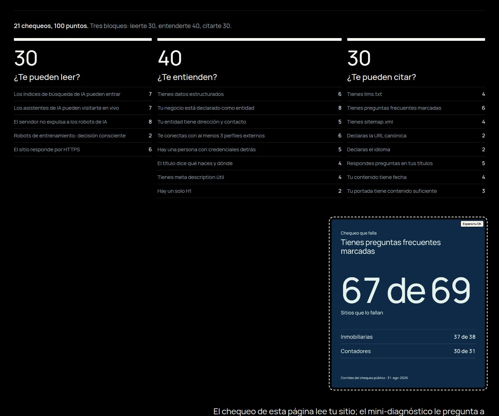</div>
      <div class="tira col--390">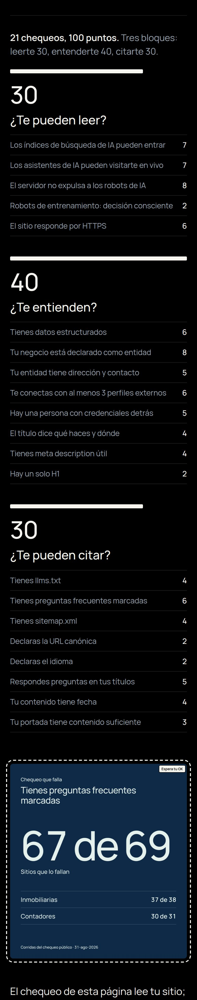</div>
    </div>
  </div>

  <div class="ok">
    <div class="ok__cab"><span class="marca">Espera tu OK</span><h3>La captura del chequeo con 85 y 54, en Desarrollo web</h3></div>
    <div class="pro">
      <p><b>Dónde:</b> pegada a «Te dejamos el puntaje por escrito». También serviría en Diagnóstico; nunca en una página con el 36 → 73 → 100.</p>
      <p><b>A favor:</b> muestra cómo se entrega el puntaje, con la pantalla real y dos dominios nuestros. <b>En contra:</b> Verifica, producto nuestro, sale con 54; y el veredicto real del 85 dice «menciones», una palabra que el brief deja fuera de las piezas mientras R2 siga abierta.</p>
      <p class="chico">Fuente: el chequeo de la vista previa, capturado hoy a las 19:30 por Bruno; la respuesta está guardada en el crudo.</p>
    </div>
    <div class="prueba__fotos lado">
      <div class="tira">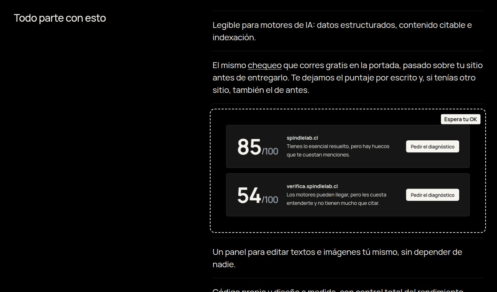</div>
      <div class="tira col--390">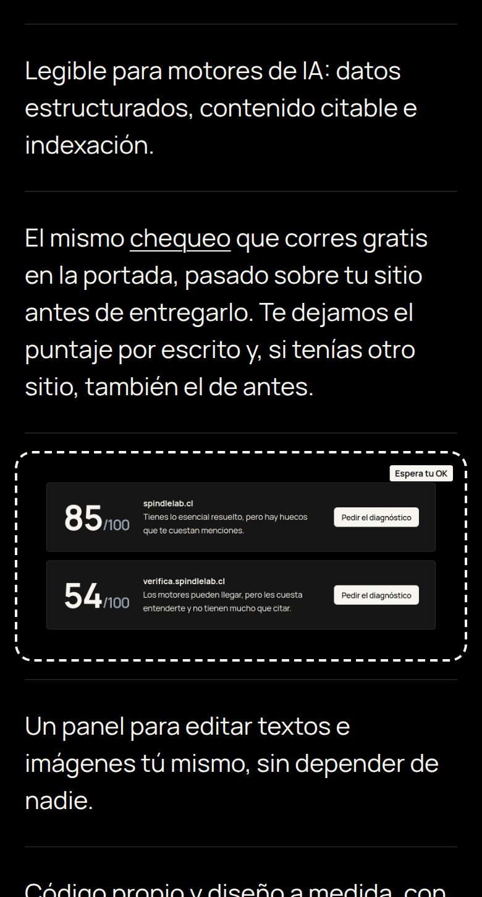</div>
    </div>
  </div>

  <div class="ok">
    <div class="ok__cab"><span class="marca">Espera tu OK</span><h3>El panel de Combeau, en Desarrollo web</h3></div>
    <div class="pro">
      <p><b>Dónde:</b> pegado a «Un panel para editar textos e imágenes tú mismo, sin depender de nadie».</p>
      <p><b>A favor:</b> es la prueba directa de esa línea, en el sitio de un cliente real. <b>En contra:</b> falta el permiso escrito de Bernardo (su ficha dice «caso público NO autorizado»), y en el editor se lee el nombre de pila de un modelo, que es el alt de una foto publicada.</p>
      <p class="chico">Fuente: capturas del panel del 3-sep, en el repo desde el 23-sep; no se pueden recapturar porque piden sesión.</p>
    </div>
    <div class="prueba__fotos lado">
      <div class="tira">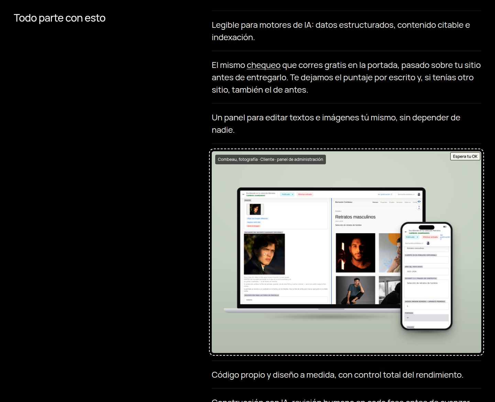</div>
      <div class="tira col--390">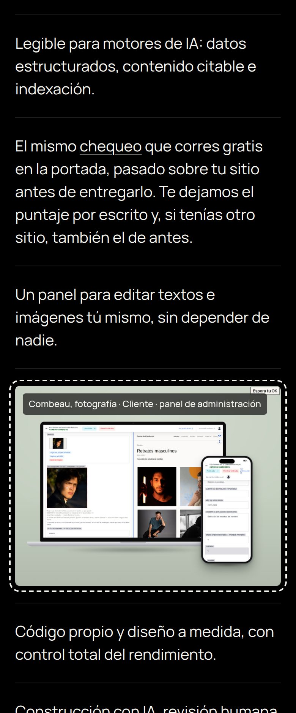</div>
    </div>
  </div>
</section>

<!-- ======================================================= PIEZAS -->
<section class="sec" aria-labelledby="piezas">
  <h2 id="piezas">Las piezas, con su fuente y su fecha</h2>
  <p class="guia">Todo texto de una lectura está literal en su captura cruda (o es un conteo con su fórmula). Ninguna lleva oro: todas miden menos de 0,05 %.</p>
  <ul class="piezas">
    <li><b>Robots.txt de spindlelab.cl</b><span>Navy (Bruno) y petróleo (variante). <code>spindlelab.cl/robots.txt</code>, capturado el 14-oct-2026 a las 19:29.</span></li>
    <li><b>Respuesta a cada robot</b><span>Petróleo. La portada pedida con el user-agent de GPTBot, ClaudeBot, PerplexityBot, OAI-SearchBot y Chrome: las cinco dieron 200. 14-oct-2026, 19:29.</span></li>
    <li><b>JSON-LD de la portada</b><span>Brasa. Los nodos del <code>@graph</code> de spindlelab.cl con sus propiedades. 14-oct-2026, 19:29.</span></li>
    <li><b>Los 21 chequeos y su peso</b><span>Petróleo (Bruno) y brasa (variante). Títulos y pesos tal como los devuelve <code>/api/chequeo</code>; coinciden con el artículo de los 21 chequeos. 14-oct-2026, 19:29.</span></li>
    <li><b>36 → 73 → 100</b><span>Brasa, de reserva (Bruno). Solo para la ficha de Verifica en Trabajo. 36 y 73 del registro del caso; el 100, medido de nuevo hoy a las 19:29.</span></li>
    <li><b>Verifica y Cumple: las 12 cosas y cómo revisamos</b><span>Lavanda. Capturas del sitio en vivo, 14-oct-2026 a las 19:29 y 19:30, montadas en notebook y teléfono.</span></li>
    <li><b>Robots.txt y JSON-LD en el navegador</b><span>Petróleo y brasa. Los monté para este tablero desde el crudo de Bruno de hoy (mismos archivos, mismo sha256), con su escena de notebook y teléfono. Si eliges la 1, él los rehace con su generador.</span></li>
    <li><b>Obra: Combeau fotografía, Combeau modelo, Raigal</b><span>Mockups del 5-oct y la captura plana de Combeau del 6-oct, ya en el sitio. Raigal siempre con «Pieza de concepto · no es un cliente» primero.</span></li>
    <li><b>Retrato de Ramón</b><span>El del sitio, solo en Acompañamiento, donde ya está.</span></li>
    <li><b>Espera tu OK: 67 de 69, captura 85 y 54, panel de Combeau</b><span>Corridas del 31-ago; chequeo capturado hoy a las 19:30; panel del 3-sep. Arriba, con sus fuentes.</span></li>
  </ul>
  <div class="aviso">
    <p><b>Ojo con una imagen que ya está en el sitio:</b> el teléfono de Combeau modelo (<code>mock-combeau-modelo-alto-2.jpg</code>) mide 0,059 % de oro con el criterio del manual (la palmera). Está hoy en Desarrollo web y en Trabajo. En los prototipos uso la versión ancha, que mide 0,0095 %; en Trabajo sigue la de hoy y se cambia en la Tanda B.</p>
    <p><b>verifica.spindlelab.cl no tiene robots.txt, llms.txt ni sitemap.xml:</b> las tres rutas devuelven la aplicación. Por eso no hay lecturas de máquina de Verifica, solo pantallas.</p>
    <p><b>Los prototipos</b> están en <code>tableros/e9-interiores/proto/</code>, armados desde el HTML construido de <code>72045f8</code> con <code>herramientas/armar-protos.py</code>; el sitio no se tocó.</p>
  </div>
</section>

</main>
